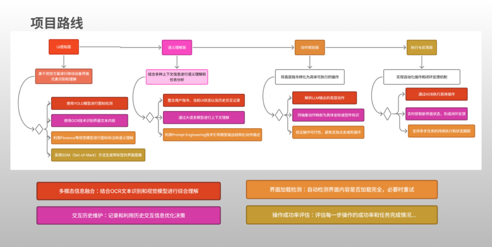
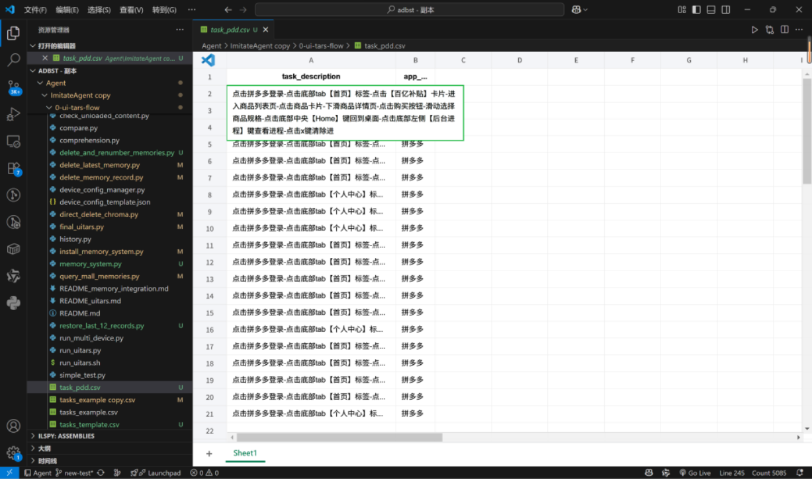
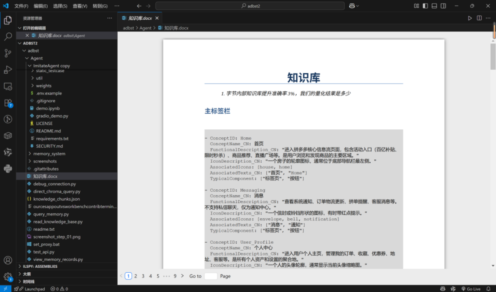

探索大语言模型与移动端UI自动化的深度融合
随着移动应用生态的迅猛发展，用户对智能交互的需求日益增长。传统UI自动化工具（如Appium）依赖预定义脚本，难以应对动态界面和复杂任务。
核心目标
构建一个能够“看懂”手机界面、“听懂”用户指令并自主完成操作的智能代理系统。
图 1：项目背景与概念演示
本项目采用了分层架构设计，确保系统各模块解耦且高效协作。
图 2：技术路线架构全景图
图 3：项目核心目标与设计机会分析
针对拼多多、得物、淘宝等应用的典型页面构建了结构化UI数据集，验证了现有LLM在新App上的零样本操作能力。
图 4：针对拼多多App构建的结构化任务数据集
构建了轻量级操作知识库，涵盖常见用户意图、标准操作路径及异常处理策略，显著提升了操作成功率。
图 5：集成至Agent决策流程的操作知识库
已部署开源Agent Cuga，正在接入LlamaTouch测试集以对比系统性能。